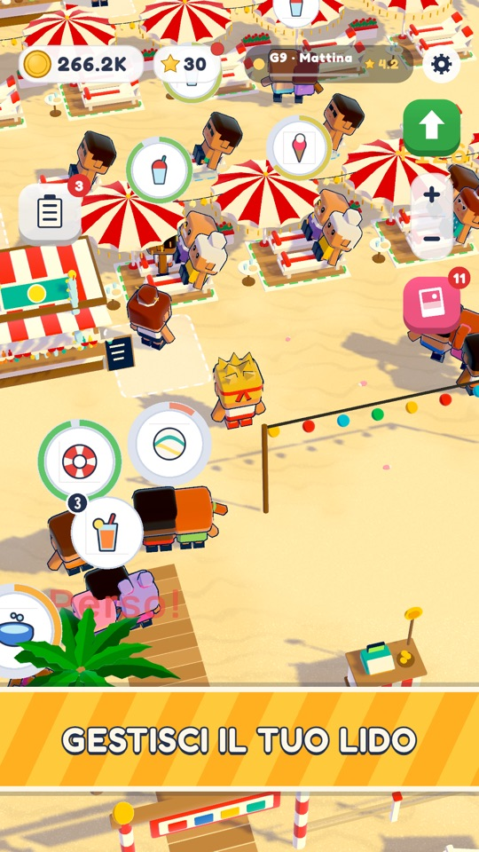
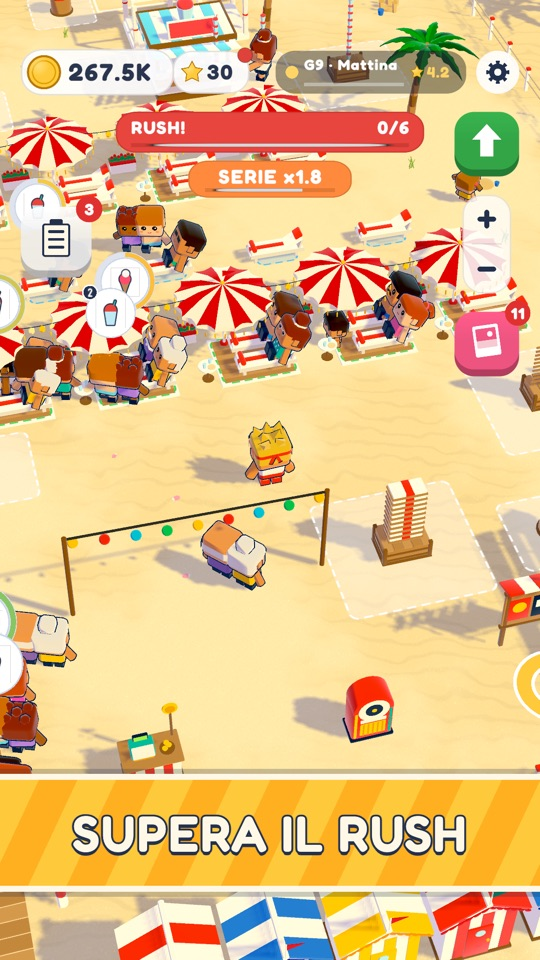
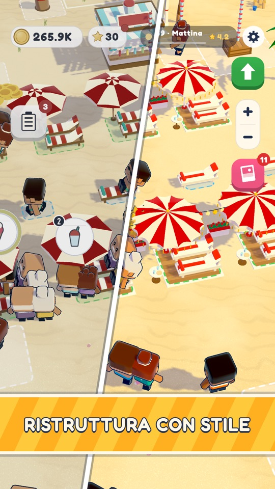
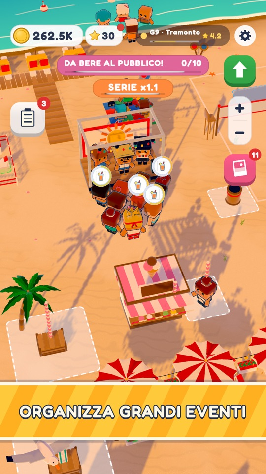
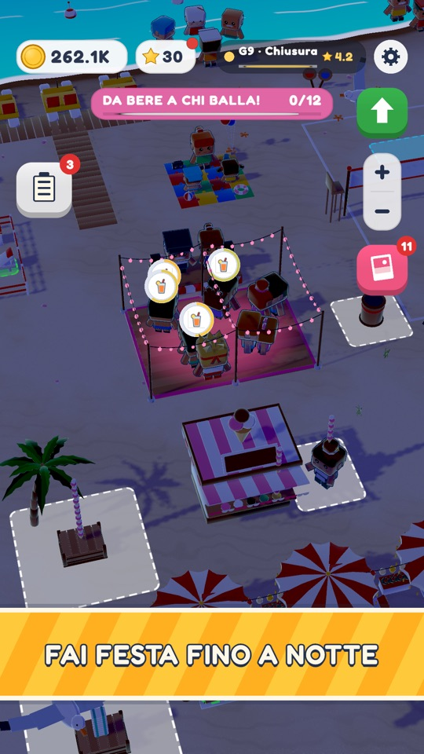
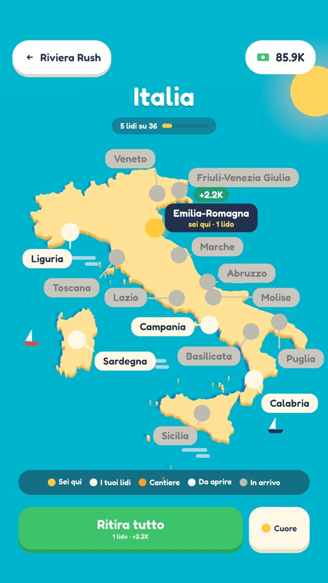
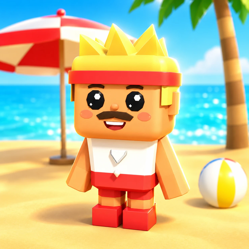

Riviera RushGestisci il tuo lido italiano
Affitta lettini e ombrelloni, porta bibite e gelati ai bagnanti, sopravvivi al Rush di mezzogiorno e trasforma una striscia di sabbia in una catena di lidi in tutta Italia. Con un pollice solo.
- Gratis
- Nessun account
- Italiano e inglese
- PEGI 3
Dal primo al nono giorno, una striscia di sabbia tranquilla diventa la spiaggia più affollata della riviera. Poi apri la prossima.
Un idle che si gioca davvero
Non guardi dall'alto: in spiaggia ci sei tu, di corsa tra il bancone e i lettini mentre le monete si accumulano.

Servi con un pollice
Vai al bancone, prendi quello che i clienti chiedono e portaglielo prima che perdano la pazienza. Più cose porti, meno viaggi fai.

Supera il Rush
A mezzogiorno arriva la folla e tutto accelera. Concatena le consegne, tieni tutti contenti e guarda crescere mance e moltiplicatore. Se ne perdi troppi, le recensioni te lo faranno sapere.

Costruisci, assumi, ristruttura
Sblocca una zona dopo l'altra: chiosco, gelateria, chiosco delle granite, pontile dei pedalò, beach volley, terrazza ristorante. Assumi il barista e gli aiutanti di spiaggia, che lavorano insieme a te, poi ristruttura ogni lido fino al livello 5, con una zona nuova a ogni livello.
Succede sempre qualcosa
Un'ondata di caldo, una raffica di vento, «cocco bello!», una barca piena di turisti. E quando il lido è completo, comincia la festa.


- Concerto al tramontoUn palco, una band e un pubblico in piedi che ha sete.
- Festa della schiumaMezzogiorno, un cannone della schiuma e cinque minuti di incassi senza sosta.
- Cinema sotto le stelleUn grande schermo sulla sabbia, in una sera d'estate.
- L'evento del postoOgni regione ha il suo: lo trovi nei lidi qui sotto.
- Il tuo album dell'estateOgni momento da ricordare finisce in una foto.
Cinque lidi, cinque estati italiane
Apri nuovi lidi sulla mappa dell'Italia. Ogni regione ha la sua costa, la sua cucina e il suo modo di fare festa.

- 1
Rimini Emilia-Romagna
Spiaggia larga e dorata · gelati e pedalò
Solo qui: il liscio sotto le luci rosa, poi i fuochi.
- 2
Porto Cervo Sardegna
Calette tra i graniti · maschere e fritto
Solo qui: barche a vela nella caletta, fritto a chi fa il tifo.
- 3
Sanremo Liguria
Lungomare e ciottoli · focaccia e pesto
Solo qui: la gara del pesto, focaccia ai tifosi.
- 4
Positano Campania
Ciottoli sotto il paese · pizza nel forno a legna
Solo qui: una serenata dal gozzo, limonata alle coppie.
- 5
Tropea Calabria
Sabbia bianca sotto la rupe · tartufo gelato
Solo qui: si balla attorno al falò, ’nduja e poi da bere.
Sulla mappa c'è già altra costa, segnata «in arrivo».
I tuoi clienti hanno sempre qualcosa da dire
Ogni sera i clienti recensiscono la giornata, e non le mandano a dire. Queste frasi vengono dritte dal gioco: i clienti sono inventati, la sincerità no.
«Nessuno ha aspettato un secondo di troppo. Ma siete umani?»
«Bel posto, ma mio marito ha aspettato dodici secondi per il lettino. Tre stelle.»
«La pizza è arrivata prima che finissi di dire margherita.»
«Focaccia perfetta. Il pesto l'ho assaggiato due volte, per sicurezza. Quattro stelle.»
«Ho fatto in tempo ad abbronzarmi in fila. E non era quello il piano.»
«Sono venuta per un'ora. Sono rimasta fino al tramonto. Fate voi.»
Stelle e vantaggi
Un buon servizio porta stelle, e con le stelle compri vantaggi che ti seguono in ogni lido.
Guadagna anche quando non ci sei
I tuoi lidi continuano a incassare a gioco chiuso. Torna, ritira e decidi cosa costruire.
Partite brevi o lunghe
Due minuti sull'autobus o un pomeriggio intero sul divano: la spiaggia ti aspetta.
Trenta secondi d'estate
Impila tutto, assumi lo staff, supera il Rush e organizza feste in spiaggia in tutta Italia. Alza il volume.
Guardalo su YouTube →Buone domande
Riviera Rush è gratis?
Sì. Riviera Rush si scarica e si gioca gratis. Contiene pubblicità, e puoi guardare video facoltativi per ottenere dei bonus.
Riviera Rush c'è su iPhone?
Riviera Rush arriverà presto sull'App Store per iPhone. Su Android è già su Google Play.
Serve un account per giocare?
No. Niente login e niente registrazioni: i progressi restano sul tuo telefono.
In che lingue è Riviera Rush?
Italiano e inglese.
Quali spiagge italiane ci sono nel gioco?
Rimini, Porto Cervo, Sanremo, Positano e Tropea, ognuna con il suo stile, la sua cucina e il suo evento d'estate. Sulla mappa c'è già altra costa, segnata «in arrivo».
Chi ha fatto Riviera Rush?
Zipangulu, uno studio indipendente italiano fatto da una persona sola: design, codice e pubblicazione sono tutti suoi. Dai un'occhiata alle altre app di Zipangulu.
Hai trovato un bug o hai un'idea?
Scrivi a rivierarush.game@gmail.com. Ogni messaggio viene letto.

L'estate ti aspetta.
Anche il tuo lido.
Gratis su Android. Presto su iPhone.